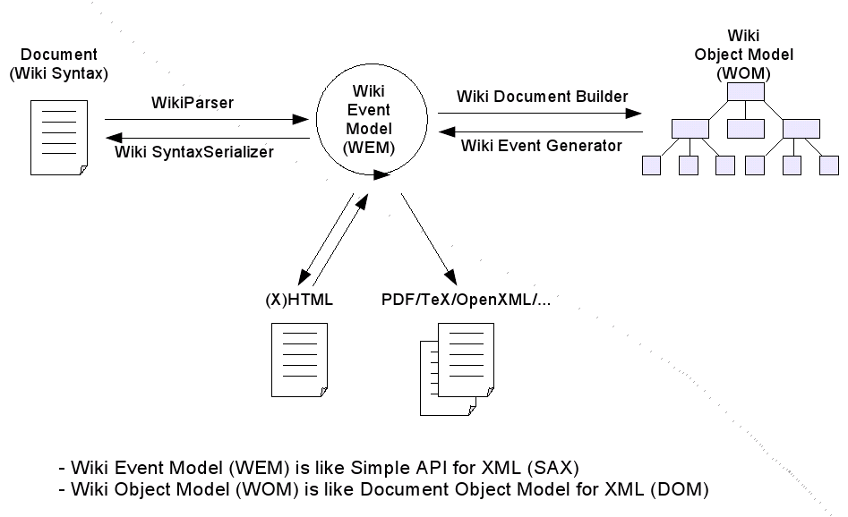
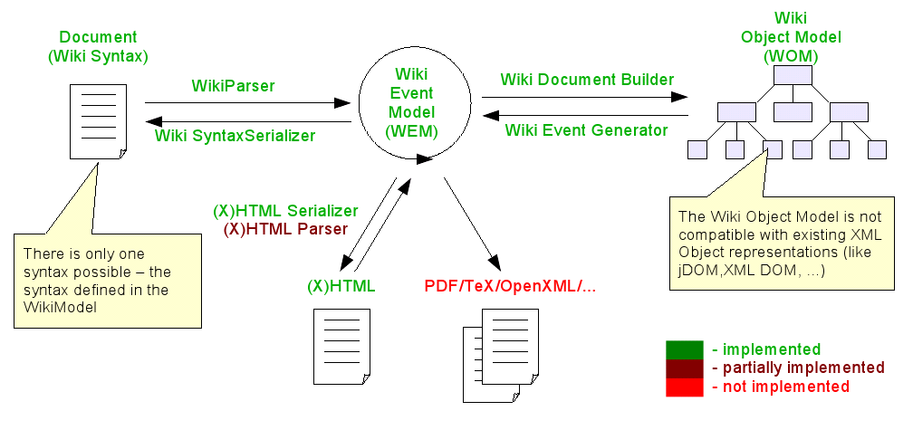
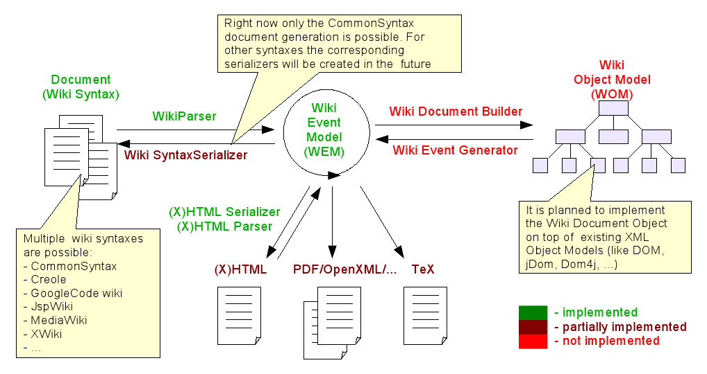
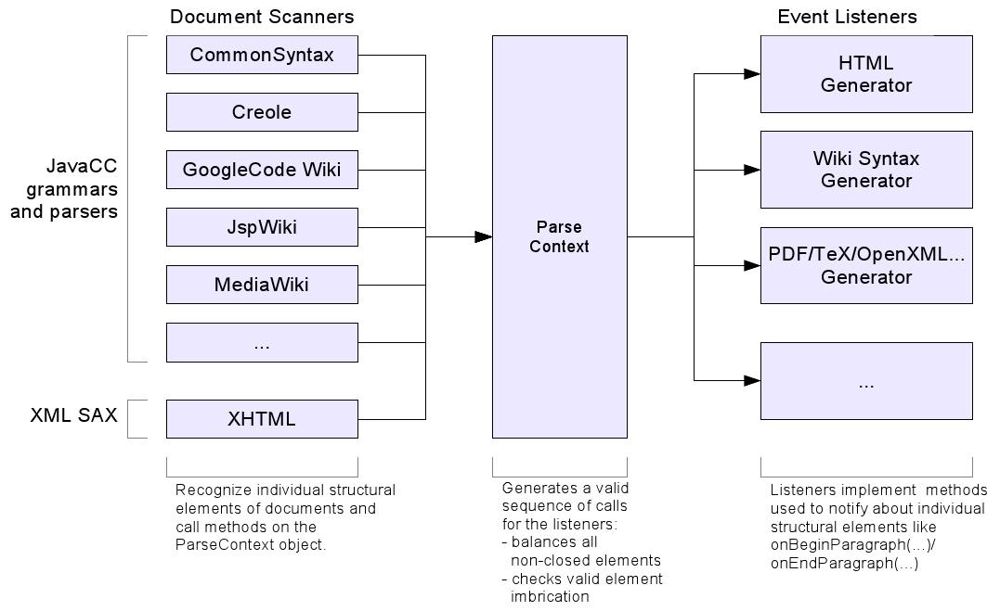
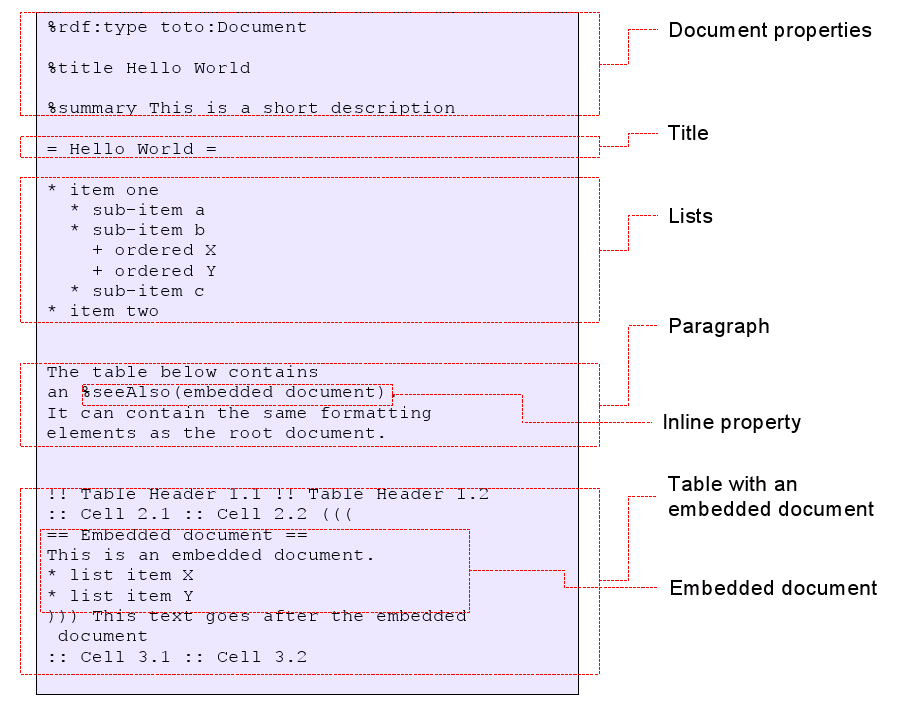
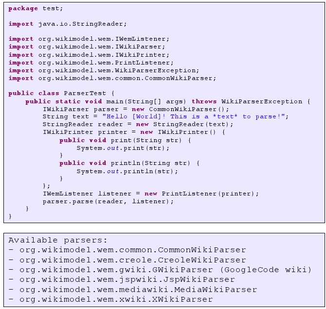

What is WikiModel?
- WikiModel is a Data Model defining the structure of wiki documents
- Defines wiki document elements and rules of their possible imbrications (like DTD/Schema for XML documents)
- WikiModel is an API providing access to the structure of wiki documents
- This API gives access to and control over the internal structure of individual wiki documents
- Usage of this API guaranties that the accessed wiki documents respect the structure defined by the model
What WikiModel isn’t?
- It is not a Wiki Engine
- It does not work with a data storage, versioning, access rights,…
- It does not check or validate references between documents
How can WikiModel be used?
- As a rendering engine to transform various wiki syntaxes to formatted content (HTML, PDF, TeX, …)
- As a parser for semantic annotations
How WikiModel Works?

WikiModel v1

WikiModel v2

WikiModel v1 and v2: Comparision
WikiModel v1
- Exists only one WikiModel-specific syntax
- Real grammar based parser (JavaCC)
- Possibility to work with “embedded” documents
- Semantic statements about documents
WikiModel v2
- Keeps all the features of v1 +
- All parsers much faster than v1
- CommonSyntax manipulates with greater number of structural elements than in v1
- Possibilities to work with documents written with multiple syntaxes
- All parsers are based on real JavaCC grammars
- Possibility to work with “embedded” documents
- Semantic statements about parts of the text
How WikiParser (v2) works

Features of WikiModel v2
- WikiModel itself does not depend on any particular wiki syntax
- WikiModel manipulates with a fixed number of structural element types and defines their possible assembly/imbrication
- Simplified structure (relative to XHTML) greatly simplifies the validation and manipulation of documents
- The document schema is sufficiently flexible to simulate almost any HTML formatting (like tables with embedded lists, headers and paragraphs)
- This is a super-set of structural elements existing in others wikies, so the information from any wiki can be imported without loosing the information or structure
- Contains notions of semantic statements about the documents and parts of a document
- CommonSyntax manipulates with all possible structural elements defined by the WikiModel v2
- Parsers for multiple wiki syntaxes are available (JspWiki, XWiki, MediaWiki, Creole, GoogleCode wiki, …).
- All parsers give access to the valid structure of documents. If a document contains non-valid elements (non-closed markup or overlapping elements) then it will be fixed automatically
CommonSyntax: Example

CommonSyntax: How it can be used
